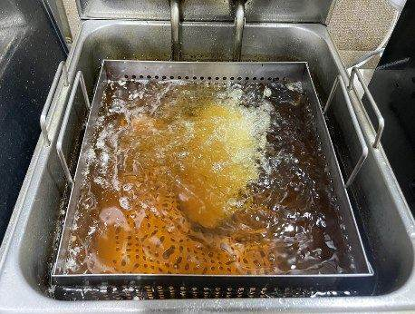
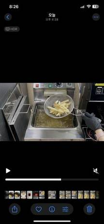
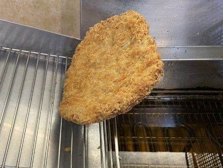
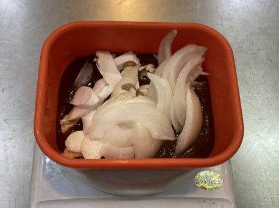
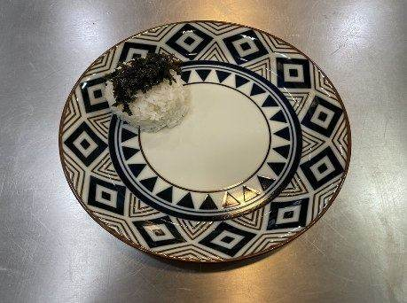
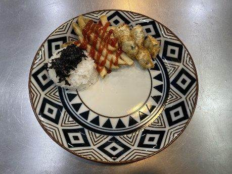
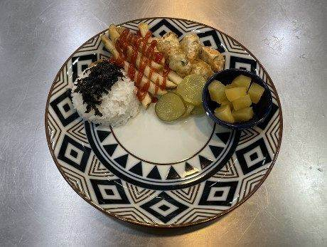
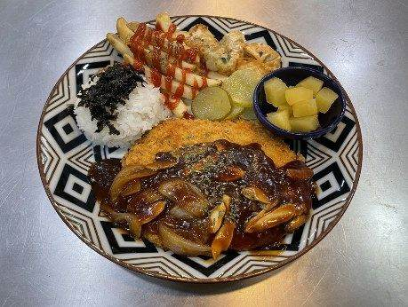

| 메뉴명 | 경양식 등심왕돈까스 |
|---|---|
| 판매가격 | 9,500원 |
| 원재료 | 등심돈까스, 밥, 김가루, 단무지, 피클, 물만두, 감자튀김, 양파, 미니새송이, 데미글라스소스, 케찹, 파슬리 |
| 사용 부자재 | 돈까스 접시, 포크, 나이프 |
| 메뉴특징 | 바삭한 등심 돈까스에 데미글라스 소스가 어우러진 클래식한 정통의 맛 |
조리방법

1
180도 튀김기에 냉동 돈까스 1장을 넣고 1분간 먼저 튀긴다.
(※중간에 뒤집어가며 튀기기)
180도 튀김기에 냉동 돈까스 1장을 넣고 1분간 먼저 튀긴다.
(※중간에 뒤집어가며 튀기기)

2
타이머가 울리면 포션한 냉동 감자튀김 1봉(80g), 물만두 5개를 넣고 4분간 함께 튀겨낸다.
타이머가 울리면 포션한 냉동 감자튀김 1봉(80g), 물만두 5개를 넣고 4분간 함께 튀겨낸다.

3
돈까스는 튀긴 후 세워서 기름을 충분히 제거한다.
돈까스는 튀긴 후 세워서 기름을 충분히 제거한다.

4
전자레인지 용기에 데미글라스소스 80g, 양파 20g, 미니새송이 20g을 담는다.
전자레인지 용기에 데미글라스소스 80g, 양파 20g, 미니새송이 20g을 담는다.

5
700W 렌지에서 2분간 데워준다.
700W 렌지에서 2분간 데워준다.

6
접시 상단에 왼쪽부터 순서대로 밥 1스쿱에 김가루1g을 올린다.
접시 상단에 왼쪽부터 순서대로 밥 1스쿱에 김가루1g을 올린다.

7
밥 옆에 감자튀김을 올린 뒤, 케찹 10g을 뿌리고, 그 옆에는 튀김만두를 올린다.
밥 옆에 감자튀김을 올린 뒤, 케찹 10g을 뿌리고, 그 옆에는 튀김만두를 올린다.

8
오이피클 30g을 올리고 소스볼에 단무지 30g을 담아 접시 위에 올린다.
오이피클 30g을 올리고 소스볼에 단무지 30g을 담아 접시 위에 올린다.

9
중앙 하단에 튀긴 돈까스를 올리고, 데운 소소를 돈까스 반만 덮히게 부어준 뒤, 튀김류에 파슬리를 뿌려 완성한다.
중앙 하단에 튀긴 돈까스를 올리고, 데운 소소를 돈까스 반만 덮히게 부어준 뒤, 튀김류에 파슬리를 뿌려 완성한다.